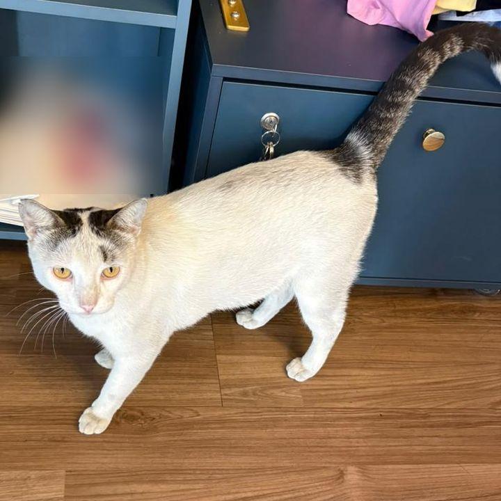

Quando e onde
Você vai?
–
pessoas confirmaram presença
Não pedimos nenhum dado pessoal. O botão só soma 1 ao contador.
Modo de teste: o contador ainda não está ligado à planilha.
O que aconteceu
Camila era uma gata comunitária da Ponta Verde, cuidada todos os dias por uma protetora.
- 29 de agosto
Camila desaparece. A protetora registra boletim de ocorrência.
- 23 de outubro
Imagens divulgadas pela imprensa mostram, segundo a Polícia Civil, dois ex-funcionários do local agredindo a gata. Os dois foram indiciados por maus-tratos, e o caso está com o Ministério Público.
-
Ato em memória de Camila.
Em nota, a academia disse que não participou nem sabia das agressões, que desligou os envolvidos e que apoia atos pacíficos.
Alerta de gatilho: detalhes da violência Contém a descrição das agressões e links para reportagens com imagens fortes. Toque para abrir.
Segundo as reportagens, as imagens mostram os suspeitos colocando a gata dentro de um saco, amarrando o saco e levando-o para uma sala. Também mostram o saco sendo arremessado contra o chão repetidas vezes, além de chutes e pisões com o animal dentro.
De acordo com a Polícia Civil, um dos suspeitos confessou o crime em depoimento.
Reportagens (com vídeo e imagens fortes):
Por que vamos às ruas
Por Camila e por todos os animais vítimas de maus-tratos.
Pela aplicação rigorosa da lei, que prevê de 2 a 5 anos de reclusão para maus-tratos a cães e gatos.
Por mais cuidado com os animais comunitários e com quem cuida deles.
Maus-tratos são crime e devem ser denunciados.
Reginaldo também precisa de um lar

Reginaldo vive na mesma região que Camila. Ele é manso e carinhoso, e queremos que ele tenha um lar seguro o quanto antes.
- Procuramos adoção responsável ou lar temporário.
- Garantimos a castração, se necessário.
Combinados do ato
- O ato é pacífico. Sem violência, sem ofensas e sem danos a nenhum patrimônio.
- Fique na calçada e deixe livres a entrada da academia, as garagens e a passagem de pedestres.
- Não entre no estabelecimento e não aborde funcionários nem clientes. Eles não têm relação com o crime.
- Não divulgue nomes, fotos, endereços ou perfis dos suspeitos. O caso está com a Justiça.
- Cartazes com respeito: foco em Camila e nos direitos dos animais.
- Leve água e leve seu lixo embora.
- Se alguém agir fora desses combinados, afaste-se e avise a organização.
Grupo do ato
Entre no grupo do WhatsApp para receber as novidades do ato.
Entrar no grupo do WhatsAppCompartilhe
Viu maus-tratos? Denuncie
Em emergência, ligue 190 (Polícia Militar). Você também pode registrar boletim de ocorrência na Polícia Civil de Alagoas, que tem uma delegacia especializada em crimes ambientais e proteção animal.